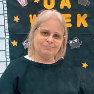

ULTIMAS NOTÍCIAS
AMAI-VOS BANDA OFICIAL DA UADEMIS?
Isso mesmo que você leu, após participarmos do ultimo culto regional do ano 19/10/2024 a banda recebeu um comunicado que deixou todos os membros de queixo caído, agora nos tornamos uma banda oficial do evento UADEMMIS, uma das maiores responsabilidades que foi posta em nossas mãos, para levarmos todos esses jovens mais perto do Pai, claramente a banda já estava esperando algo semelhante, pois a presença constante em diversos eventos era notório aos olhos de muitos líderes, mas entretanto, a banda recebeu Isso com supresa.

Regina Celia Rossi
Líder Regional
"Vocês são a banda oficial da uademis Santos, todos os eventos que o Senhor permitir eu vou colocar vocês"
AMAI-VOS PROMETE SHOW INESQUECÍVEL PARA ENCERRAR O ANO!
A banda AMAI-VOS, conhecida por seu som, está finalizando os preparativos para o maior show de sua carreira. No dia 21/12/2024, a banda se apresenta no ARENA SANTOS e promete uma noite mágica para mais de mil pessoas.
Com um repertório repleto de hits e novidades, a apresentação contará com a participação de jovens talentos, toda uma estrutura que será algo inesquecível, e para você que já conhece, aquele toque que a UADEMIS sabe fazer. Além disso, a banda está preparando uma surpresa especial para os fãs que comparecerem ao evento.
VOCÊ NÃO PODE PERDER
Entrada gratuita
BANDA AMAI-VOS PARTICIPA DE EVENTO ORGANIZADO PELA UADEMIS
No dia 20/07/2024 UADEMIS organizou um evento de grande magnitude no Centro Esportivo Manoel Nascimento Jr na Zona Noroeste, onde reuniu mais de 500 jovens fora crianças e adultos, o evento serviu para arrecadar alimentos para a montagem de cesta básica com Isso junto com esta ação os jovens se reuniram para participar de brincadeiras e ouvir da palavra do Senhor.
Junto a tudo isso a Amai-vos foi chamada para realizar um momento de louvor para deixar os Jovens mais unidos, trazendo diversas musicas que tocavam os corações, com um ano de banda esse foi um dos maiores eventos que a banda já participou.
.jpg "Imagem do Dia 1 de 9")
.jpg "Imagem do Dia 2 de 9")
.jpg "Imagem do Dia 3 de 9")
.jpg "Imagem do Dia 4 de 9")
.jpg "Imagem do Dia 5 de 9")
.jpg "Imagem do Dia 6 de 9")
.jpg "Imagem do Dia 7 de 9")

.jpg "Imagem do Dia 9 de 9")